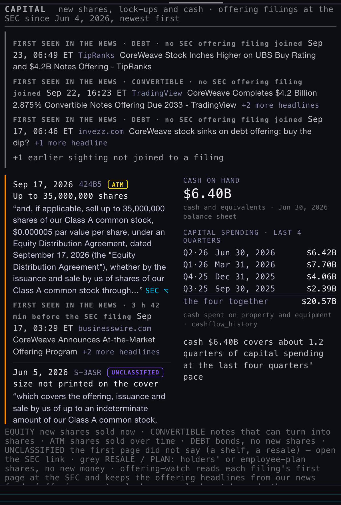
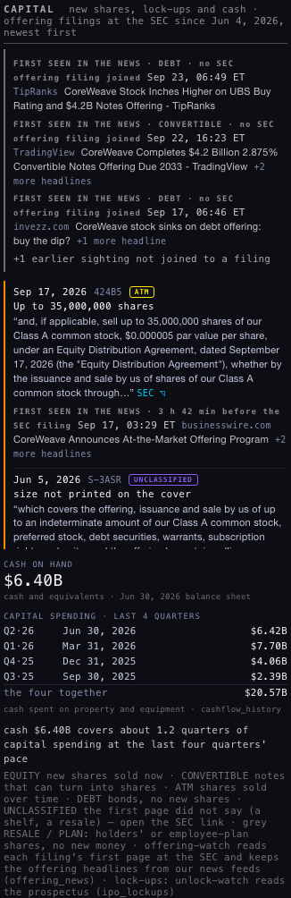
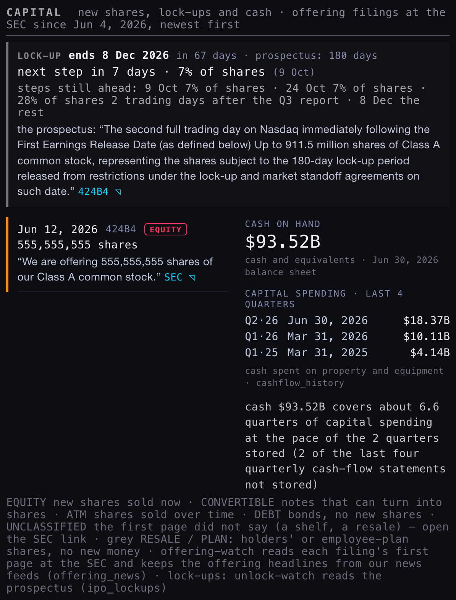
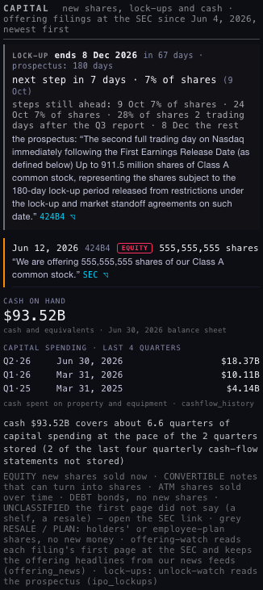
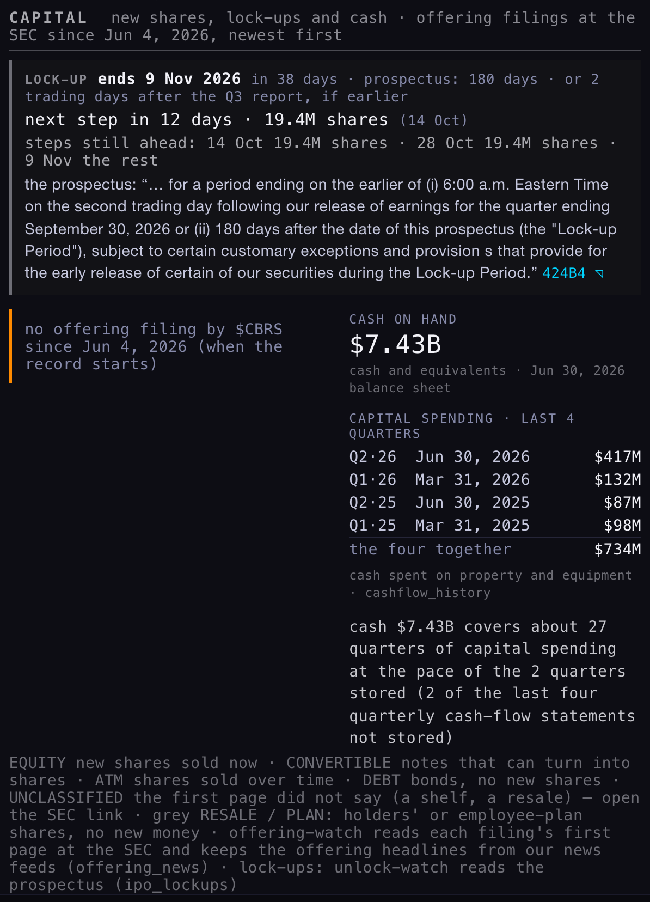
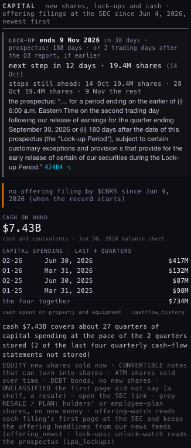
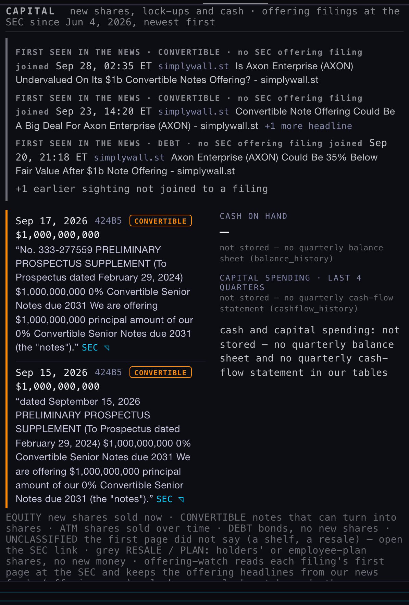
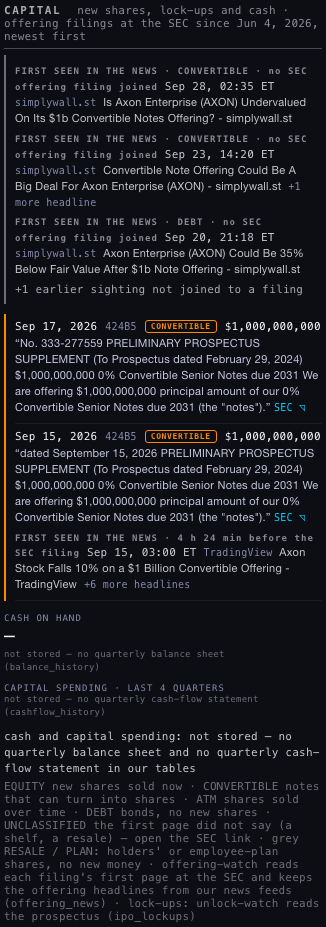
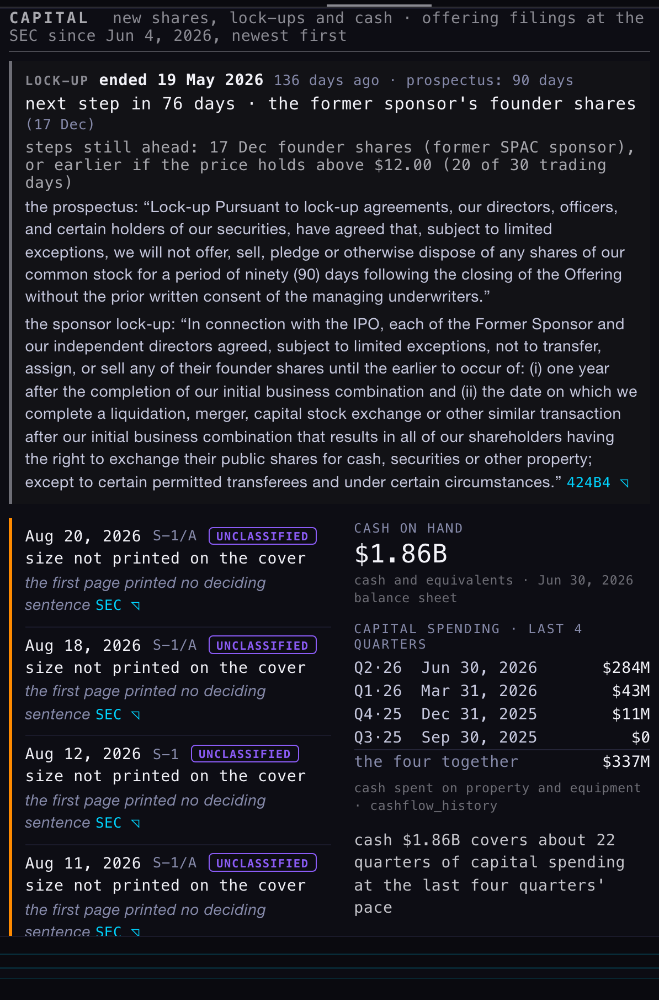
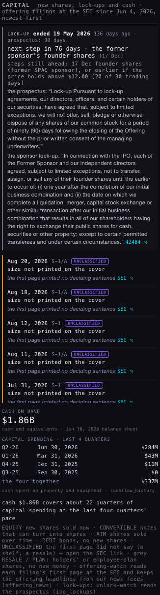

CAPITAL
THE PICTURES · FINANCIALS → CAPITAL, AT 1680 (×2) AND ON A PHONE (390)










WHAT CHANGED, ITEM BY ITEM
| # | What you asked | What it does now |
|---|---|---|
| 1 | A short title | "CAPITAL", in the same place (first thing in FINANCIALS), with the same look. |
| 2 | Lock-ups in CAPITAL | When the lock-up ends, a countdown to the next step ("next step in 7 days · 7% of shares"), the steps still ahead, and the prospectus sentence. The lock-up line in STATS is gone, so each company fact has one home. The IPO LOCK-UPS card on the EARNINGS page stays as the market-wide calendar. |
| 3 | Cash against spending | One sentence: cash ÷ (the last four quarters of capital spending ÷ 4). If fewer quarters are stored it says how many. If a statement is missing it says "not stored" and names it (Axon: both). |
| 4 | The press release first | Each nightly run of offering-watch now also checks the news we already store. Offering headlines from the last 2 days go into a new table, offering_news, and get matched to the SEC filing once it arrives. A headline only counts if it names the company and an actual security or amount. On CAPITAL, a matched headline sits under its filing and says how much earlier it came. An unmatched one gets its own "first seen in the news" line (the 3 newest are shown and the rest counted). |
| 5 | Resales and employee plans apart | Grey RESALE / PLAN chips. The class chip also turns grey, so only real new shares stay coloured. This is read from the sentence that decided the class. A shelf the company itself also sells from is never marked RESALE. |
| 6 | SPAC sponsor lock-ups | unlock-watch now reads one more kind of clause: "founder shares … until … one year after the completion of our initial business combination", together with the merger's printed closing date. It never assumes a date. SharonAI: 17 Dec 2026, or earlier above $12.00. This shows in CAPITAL and on the EARNINGS card. |
WHERE THE NEWS COMES FROM — AND MASSIVE
Our news table is filled every minute by the news-feed job (cron 6). It holds FMP's feed (press releases from businesswire, globenewswire and others, plus Reuters and more), Google News and investing.com. In the last 7 days that was 26,513 Google, 6,491 FMP and 3,191 investing.com headlines. Massive's own news (/v2/reference/news) is not among them, and there is no Massive key in app_config (the FMP key sits there). So the job does not read Massive, as the brief said.
FMP's press-release feed already beats the SEC. CoreWeave's at-the-market press release was stored for 03:29 ET on 17 Sep, and the filing was accepted at 07:11 ET. Axon's convertible headline came 4 h 24 min before its filing. CoreWeave's $3B convertible was a private sale with no SEC offering filing at all, so the news is the only sighting of it.
RUNS AND NUMBERS
offering-watchv8 deployed (code version offering-watch-v2). Run by hand in pass mode from us-west-2 with a 21-day news window, so the September cases are included (the nightly default is 2 days). It read 311 candidate headlines, kept 129 and matched 38 to their filing. 0 SEC reads were needed, and no filings were new tonight.- The first run kept 158 headlines, but Google files stories under the wrong ticker: Costco got another company's offering, and Target got "price target". I added the company-name check, cleared those 158 rows from the new table and ran it again.
unlock-watchv6 deployed (unlock-watch-v2). Run by hand for SharonAI. Mistake, then fixed: the first named run skipped the IPO calendar, read the merger document instead of the February prospectus and overwrote SharonAI's row (SPAC / 180 days / 16 Jun). I made the named path read the calendar as the nightly scan does, checked a dry run, and re-ran it. The row is back to its earlier values (IPO, 90 days, 19 May 2026, the same clause) plus the sponsor step.- Headless walk (
tools/c1-walk.mjs): 0 writes attempted, 0 page errors. STATS has no lock-up line for any of the five names. - New table
offering_news(additive; anon can read, cannot write). Rollback written first:_archive/backend-fix-20260928/ROLLBACK-offering_news-20261002.sql. No existing table changed, and no cron created or changed.
WHAT COULD BE WRONG · WHAT I DID NOT DO
- The headline filter still lets a few through: a fool.com story about Alphabet's private placement is filed under AAPL and BRK-B because their names appear in it, and one Realty Income match is really "Apollo Realty Income". A follow-up headline ("Completes $4.2B offering") can show as its own sighting.
- RESALE / PLAN is read only from the one stored sentence. A resale whose sentence doesn't mention selling holders stays coloured. S-8 (employee plan) and 424B3 (resale) forms aren't collected at all, so PLAN will be rare.
- The coverage counts capital spending only. It doesn't subtract the cash the business makes, and it doesn't project future spending.
- News timestamps are as stored (FMP's Eastern-time stamps, converted). I did not check them against each wire's own page.
- The Hub itself was not deployed. The nightly crons (283/284/285) pick up the new function versions automatically.